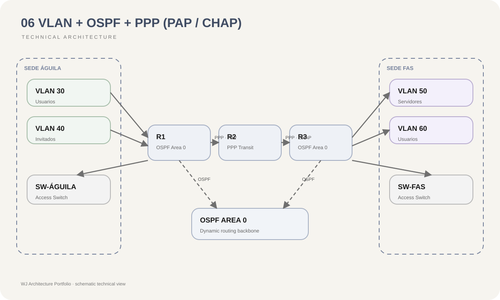

Red plana
Las VLAN reducen dominios innecesarios y permiten separar funciones de red.
06 / Routing & Switching
Arquitectura de routing y switching con VLAN, enrutamiento dinámico y autenticación de enlaces WAN.
07 / Risk Reduction
Las VLAN reducen dominios innecesarios y permiten separar funciones de red.
OSPF facilita intercambio dinámico de rutas entre segmentos y routers.
PPP con autenticación permite validar enlaces punto a punto dentro del laboratorio.
La combinación de segmentación y routing dinámico mejora la escalabilidad lógica.
01 / Context
Una red con varias áreas funcionales necesita separar dominios de broadcast, permitir comunicación controlada entre VLAN y mantener conectividad entre routers sin depender exclusivamente de rutas estáticas.
02 / Objective
Diseñar una topología capaz de integrar segmentación mediante VLAN, routing inter-VLAN, OSPF y enlaces PPP autenticados para representar un escenario empresarial distribuido.
03 / Architecture
La topología integra cuatro routers y múltiples VLAN. El segmento ÁGUILA utiliza VLAN 30 y 40, mientras FAS utiliza VLAN 50 y 60. OSPF distribuye las rutas entre las redes. Los enlaces WAN incorporan autenticación PPP, utilizando PAP en uno de los enlaces y CHAP en otro.
04 / Diagram

05 / Decisions
Cada grupo lógico opera en un dominio de broadcast independiente.
Los segmentos pueden comunicarse mediante interfaces de capa 3 y políticas de routing.
Las rutas se anuncian dinámicamente, reduciendo administración manual cuando cambia la topología.
PAP y CHAP permiten demostrar distintos mecanismos de autenticación sobre enlaces punto a punto.
06 / Stack
08 / Result
La solución integra segmentación LAN y conectividad WAN dentro de un único diseño. OSPF proporciona conocimiento dinámico de las redes y los enlaces PPP incorporan mecanismos de autenticación para la comunicación entre routers.
08 / Lessons
Separar switching, routing y seguridad como conceptos facilita diagnosticar la red. Las VLAN resuelven segmentación de capa 2, OSPF distribuye alcance de capa 3 y PPP controla características específicas del enlace WAN.